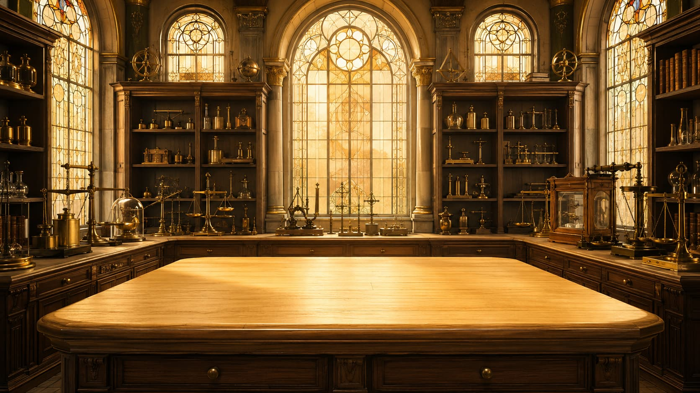

The Mole and Molar Mass
Discover why chemists created the mole and learn how to calculate the molar mass of any substance.

Professor Rafaela
Let's begin.

Study complete
Discover why chemists created the mole and learn how to calculate the molar mass of any substance.
